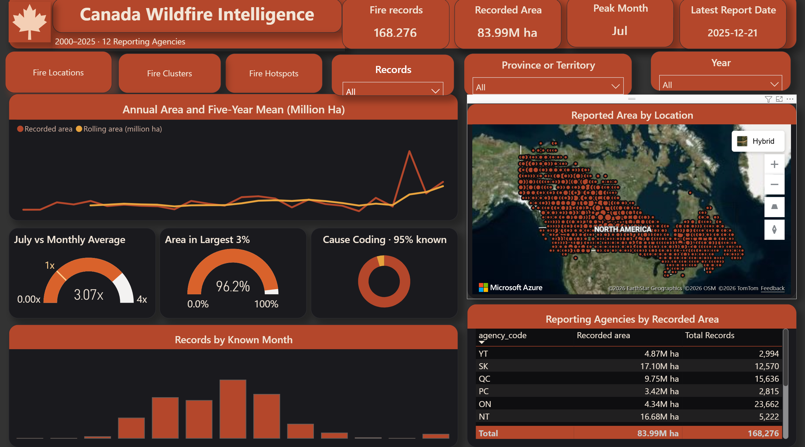
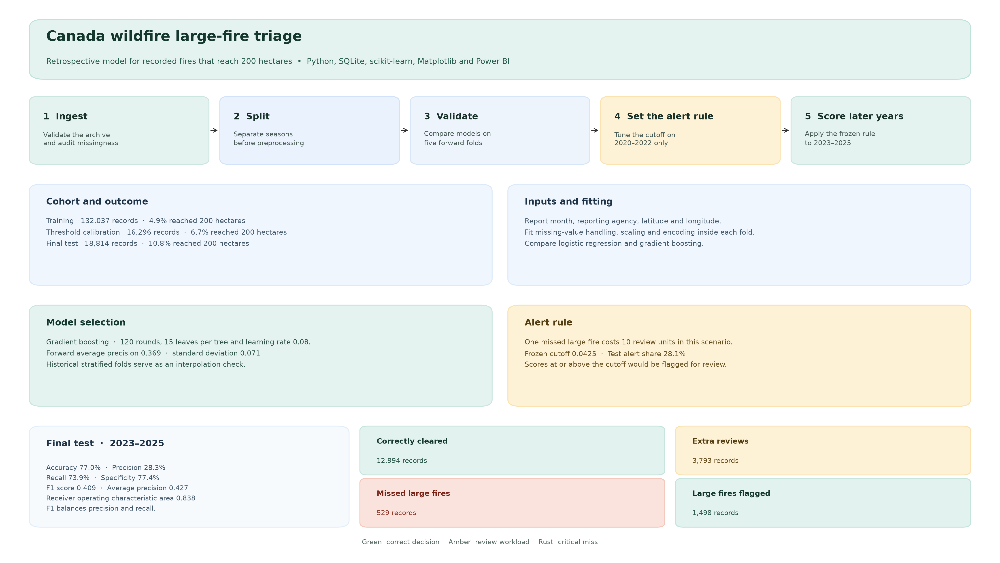

Environmental analytics · Retrospective research
Can we flag recorded Canadian wildfires that reach 200 hectares?
I tested how much manual review a wildfire team would take on to miss fewer large fires. The study follows records from 12 reporting agencies in the Canadian National Fire Database and evaluates the alert rule on the held-out 2023–2025 seasons.
Patterns in the data
Across 2000–2025, July recorded 3.07 times the average calendar-month count. The largest 3% of records accounted for 96.2% of pooled recorded area, while the within-agency share ranged from 59% to over 99%. July’s volume is useful for reviewing seasonal staffing. The agency range points to different large-fire workloads.
Power BI Executive Summary
I built this view to show when wildfire records peak and how much of the recorded area comes from the largest fires. It covers 168,276 records and 83.99 million hectares across 12 reporting agencies from 2000 to 2025.
Explore the interactive dashboard ↗

Open in Power BI (sign-in and report access required) · Request a walkthrough
Impact and decision trade-offs
The selected rule flagged 1,498 of 2,027 large fires and missed 529. It sent 28.1% of all records for review. Of those alerts, 3,793 concerned fires that ended below 200 hectares.
| Alert rule | Large fires flagged | Large fires missed | Extra reviews |
|---|---|---|---|
| Default cutoff | 81 | 1,946 | 45 |
| Selected cutoff | 1,498 | 529 | 3,793 |
Who can use the research?
- Wildfire operations planners can use historical seasonality as a starting point for staffing reviews and check agency-specific patterns before setting dates.
- Regional emergency management and mutual-aid coordinators can compare how much area came from large events and use the results to frame capacity discussions.
- Analysts reviewing a triage rule can compare missed large fires with the extra workload at each cutoff before proposing a prospective test.
Agencies record small fires differently. The Power BI Trust page shows those differences so that readers can interpret record counts in context. Recorded area also reflects the reporting scope and provides no direct measure of community exposure.
How I built it
- SQLite organized the reporting archive and extracted the reviewed study records.
- Python and scikit-learn compared two models using earlier fire seasons. I chose the alert cutoff on 2020–2022 data before scoring the held-out seasons.
- Matplotlib turned the verified results into a workflow diagram. The study also produced aggregate files for a separate Power BI model review.
I treated one missed large fire as ten extra reviews when selecting the cutoff. That cost ratio is a planning assumption. The study supports historical review planning. Live use would require confirming which inputs were available at the first report and testing on new seasons.

Explore the results
Read the Ontario air quality study ↗
View the research repository · Read the modeling methods and reproduction steps
Download the policy comparison · Download the year-by-year results